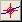
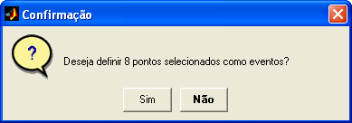

| Menu
Ferramentas |
|
Essa operação
permite definir o
conjunto de observações selecionadas como eventos.
- Usando as funções de seleção do R_DAT, selecione um
conjunto de até 50
observações desejadas;
- Clique em
“Ferramentas ► Gerenciamento de eventos ... ►
Definir pontos selecionados como eventos”
ou no botão 
Caso não haja
tempo de referência
definido, o usuário será solicitado a cadastrá-lo.
O R_DAT irá
informar o número de observações
selecionadas para confirmação:

Ao clicar
“Sim”, as observações selecionadas serão acrescentadas
à lista de eventos e poderão ser gerenciadas pela ferramenta
de edição de eventos.
Após a confirmação, o usuário será questionado se deseja desselecionar os pontos.
| |
Editor de eventos |
Deslocar
eventos no tempo |
|